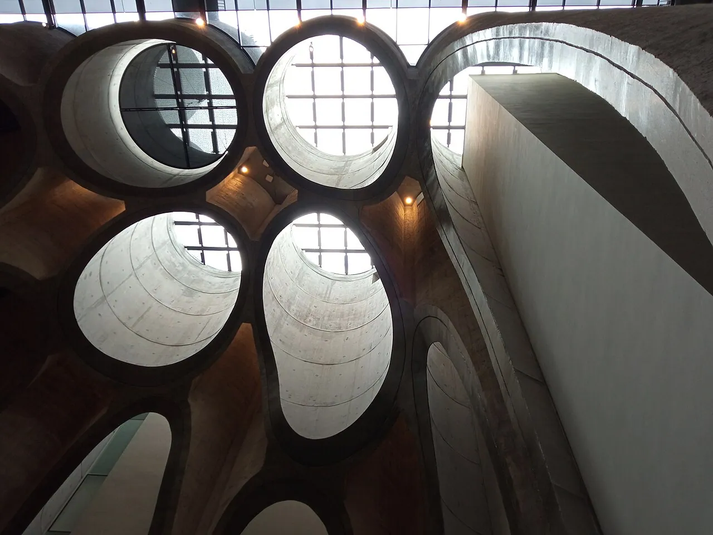
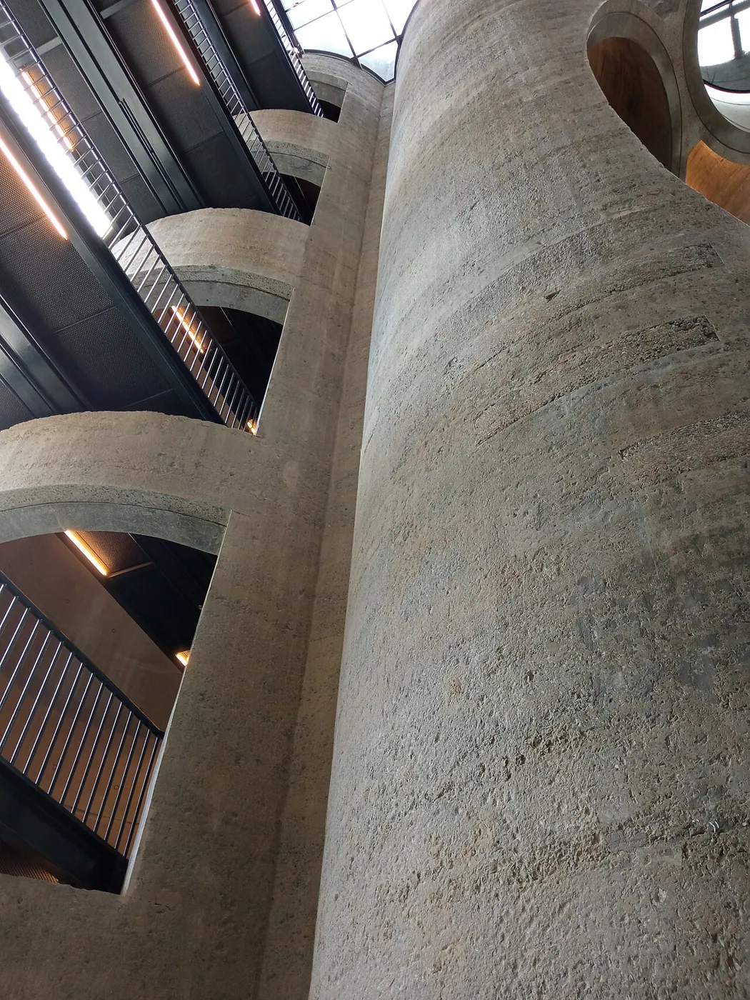
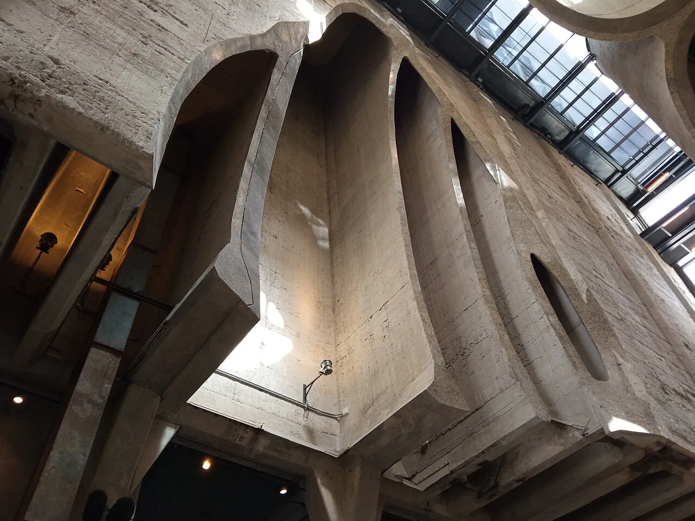
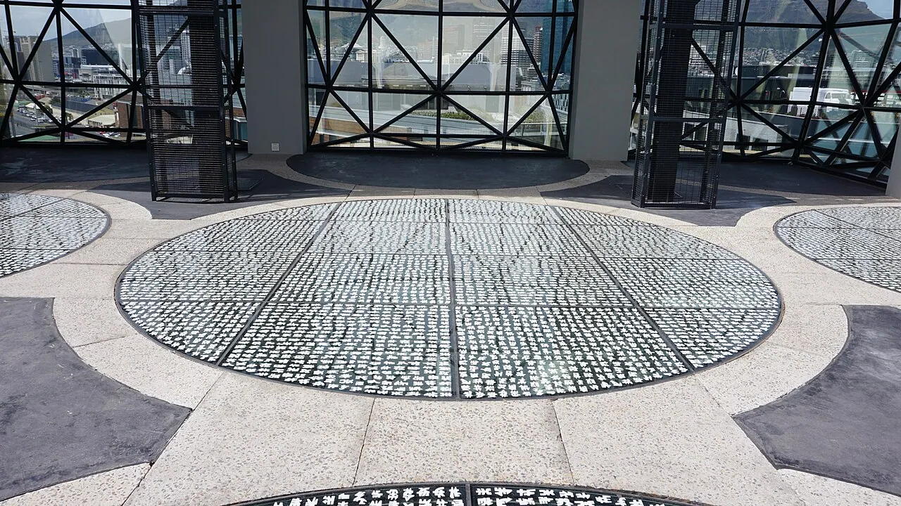
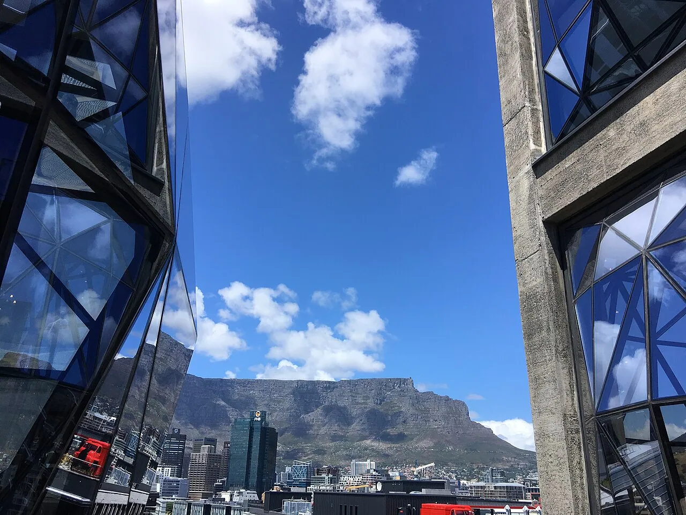

1/9 · Exterior · Zeitz Museum of Contemporary Art AfricaPhoto: Axxter99 · CC BY-SA 4.0 · source2/9 · ExteriorPhoto: Dietmar Rabich · CC BY-SA 4.0 · source3/9 · Exterior · Exterior of the Zeitz MOCAA - Museum of Contermporary Art Africa buildingPhoto: Michael Rowe · CC BY-SA 4.0 · source

4/9 · Interior · Skylights of the Zeitz MOCAA - Museum of Contermporary Art AfricaPhoto: Michael Rowe · CC BY-SA 4.0 · source5/9 · Interior · Cross-section of the shafts inside Zeitz MOCAA - Museum of Contermporary Art AfricaPhoto: Michael Rowe · CC BY-SA 4.0 · source

6/9 · Interior · Looking up at the corridors leading from the shafts of the Zeitz MOCAA - Museum of Contermporary Art AfricaPhoto: Michael Rowe · CC BY-SA 4.0 · source

7/9 · InteriorPhoto: Michael Rowe · CC BY-SA 4.0 · source

8/9 · Detail · EL Loko's Cosmic Letters at Zeitz MocaaPhoto: Mariel Loko · CC BY-SA 4.0 · source

9/9 · Context · Zeitz Museum of Contemporary Art Africa ] (Zeitz MOCAA), Cape Town, South AfricaPhoto: Erika R. Brenner · CC BY-SA 4.0 · source


,_Waterfront,_Zeitz_Museum_of_Contemporary_Art_Africa_--_2024_--_2980.jpg){kind=link}